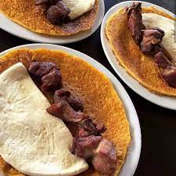

Lisandro Miguel Reinozo Melendez
Henry
Tarea de html / Css
La Cachapa es una torta fina de maíz molido, con queso y papelón (o azúcar),
cocida en budare; es conocida en toda Venezuela pero se consume más en la región central.
Dulce
y Salado Resturant
- Cachapa con Queso y Chicharon

- Cachapa con queso